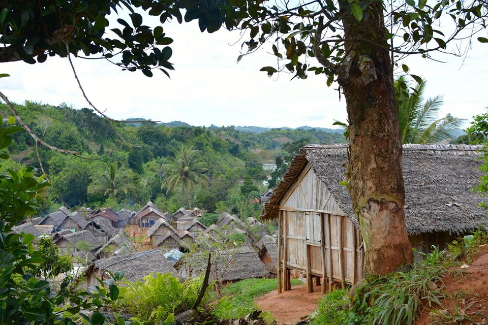
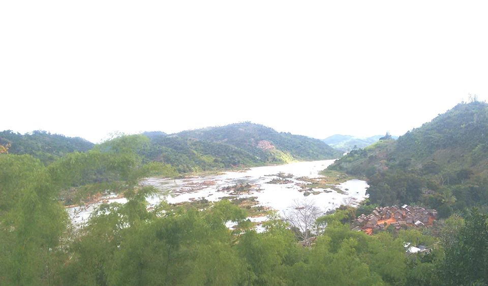

Sample image
A lovely small village which is called Andovolalina is my hometown and it is located 35 km away in west of Mahanoro. It was built in many centuries ago after Ambohimahasoa village was burnt which was placed on the top of Ambohilavenona mountain. And the residents decided to move it near by Mangoro river and Andovolalina stream which are about 2 km down the mountain. They chose to live next to a river and a stream so that thy won't struggle to fetch water for drink and find fish for food. So since then, we call the village with the name of Andovolalina stream.
Mangoro river view
Andovolalina has a hospital, a primary school or EPP, a secondary school or CEG and three chirches which are Cathlic, FJKM and Jehovah witness. My town looks so tiny and poor but the special thing about it is its community and lifestyle, they have a high quality of wellcoming and relationship. There are aproximately four thousand residents and the majority of those are farmers. Their lives are simple but are impresive, thy plant Rice, Cassava, Sweet potatoes, Wild potatoes, Vegetables and they farm animals such us Pig, Zebu, Chicken etc. They grow exported plants as well such us Cloves, Coffee, Vanilla and Litchi which are undertaken care of because the farmers do not have much knowledge and the real problem is that they sell their products very cheap given that there is no way to export them exept using small conoes.
In general, I love my village even though the way of living is tough because that leads us to work hard and gives us power and confidence to fight with life.
Email me if it is needed